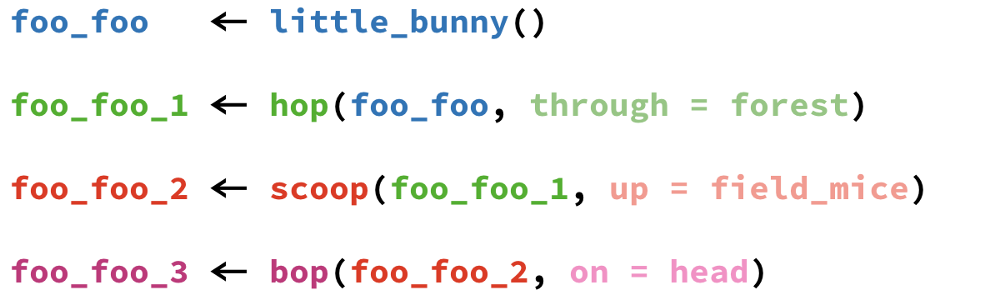
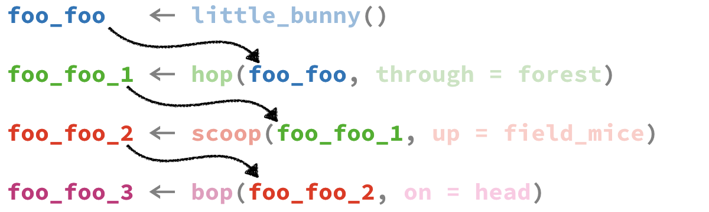
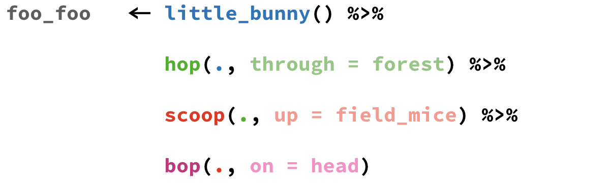
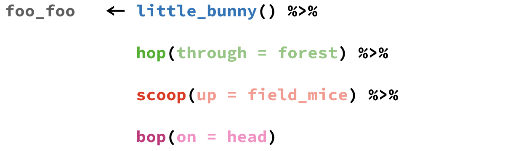
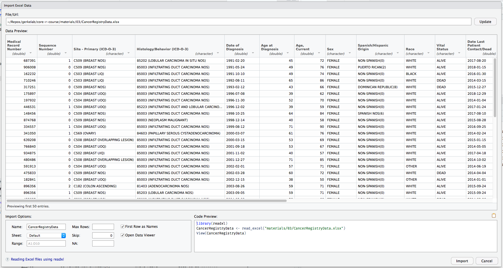
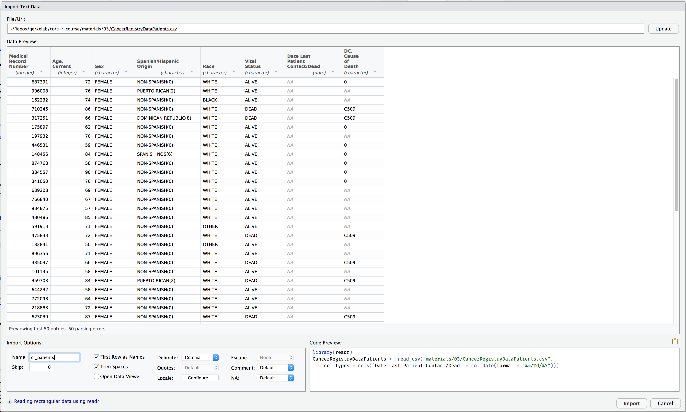

Story
Little bunny Foo Foo
Went hopping through the forest
Scooping up the field mice
And bopping them on the head
In the last session we talked about 5 important dplyr verbs. What do each of these functions do?
Answer
Answer
Answer
Answer
Answer
What are the three “rules” of dplyr verbs?
Answer
dplyr functions are written as verbs with the following rules:
The first argument is a data frame.
Inside the function, you can use column names as if they were variables.
The %>% operator lets you chain together processing steps.
Little bunny Foo Foo
Went hopping through the forest
Scooping up the field mice
And bopping them on the head




Rewrite the following using pipes.
ex1 <- group_by(example, site_code)
ex2 <- mutate(ex1, tumor_size = tumor_size * 10)
ex3 <- summarize(ex2, avg_tumor = mean(tumor_size))Want to learn more about the pipe operator? The Pipes in R Tutorial from DataCamp is a great place to start!
Or read the chapter on Pipes in R4DS. (The source of this example.)
Source the example_single_patient.R file we created in our last session so that the example data frame and dplyr are loaded.
example:
| patient_id | age_dx | age_visit | tumor_size | site_code |
|---|---|---|---|---|
| 5554321 | 54 | 54 | 9.5 | C220 |
| 5554321 | 54 | 55 | 9.5 | C400 |
| 5554321 | 54 | 56 | 9.7 | C412 |
| 5554321 | 54 | 57 | 9.9 | C220 |
| 5554321 | 54 | 58 | 10.1 | C400 |
Use the pipe operator %>% and dplyr verbs to complete the following task:
Use the example dataset
Filter out tumors larger than 10
Calculate follow_up time as the number of years between diagnosis and the patient’s visit
Calculate the average follow up time by site_code
Answer
example %>%
filter(tumor_size <= 10) %>%
mutate(follow_up = age_visit - age_dx) %>%
group_by(site_code) %>%
summarize(avg_follow_up = mean(follow_up))# A tibble: 3 x 2
site_code avg_follow_up
<chr> <dbl>
1 C220 1.5
2 C400 1
3 C412 2 Import
Hands-on Working with Data
Export
Download the CancerRegistryDataPatients.xlsx and CancerRegistryDataPatients.csv data files from the Session 4 Materials page.
In the Files pane of your RStudio project, click ▸ to open the folder in a file browser. Copy or move the data files from your downloads folder into your project folder. Check that you see the files in RStudio.
If you’re running RStudio in your browser (e.g. on rstudio.cloud), you can run the download.file() commands in the materials page.
There are two main packages for reading in data: readr for CSV and readxl for Excel.
If you have the option in your data source, choose to export your data as a CSV file. The options and control for importing into R using readr are more powerful and more easily customized.


Here is a small reference for date/time formats. See ?strftime for more time format placeholders.
%m/%d/%y: 01/02/06
%m/%d/%Y: 01/02/2006
%Y-%m-%d: 2006-01-02
%m/%d/%y %H:%M: 01/02/06 15:04
%m/%d/%y %H:%M:%S: 01/02/06 15:04:05
%m/%d/%y %I:%M:%S %p: 01/02/06 03:04:05 PM
Use RStudio to look through the dataset using the RStudio viewer. Try the functions View() and glimpse().
Observations: 150
Variables: 8
$ `Medical Record Number` <int> 687391, 906008, 162232, 71024...
$ `Age, Current` <int> 72, 76, 74, 86, 66, 62, 70, 5...
$ Sex <chr> "FEMALE", "FEMALE", "FEMALE",...
$ `Spanish/Hispanic Origin` <chr> "NON-SPANISH(0)", "PUERTO RIC...
$ Race <chr> "WHITE", "WHITE", "BLACK", "W...
$ `Vital Status` <chr> "ALIVE", "ALIVE", "ALIVE", "D...
$ `Date Last Patient Contact/Dead` <date> 2017-08-20, 2018-01-15, 2016...
$ `DC, Cause of Death` <chr> "0", NA, NA, "C509", "C509", ...What questions can you ask and answer using this dataset and dplyr?
write_csv()To export the data, use the function write_csv() from readr. This function takes the data frame as the first object, and a path (or filename) where the file should be written.
It’s a good idea to save your output files in a separate directory, like output_04 for outputs from this session. If you get an error like this
Warning in open.connection(path, "wb"): cannot open file 'output_04/
CancerRegistryPatients_export.csv': No such file or directoryError in open.connection(path, "wb"): cannot open the connectionit is most likely because the directory output_04 doesn’t exist in your current working directory. You can use the Files pane in RStudio to create one, or you can run
The Session 04 materials page includes a file called cancer_registry_dplyr.R. Download this file and move it into your project folder.
Or download it in R
I’ve added code to get you started, but there are pieces missing. Fill in the places where you see ________.